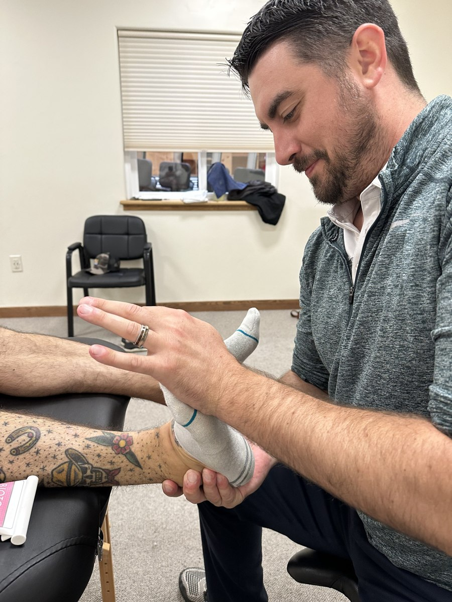

Individual Attention. Personal Goals.
Physical Therapy
Hands-on care and exercise, built around the way you want to move.
Physical Therapy
One-on-one Care
We prioritize personalized care for each client, recognizing that everyone's needs and objectives are different. Your physical therapist will provide individualized attention during every session, guiding you through manual therapy techniques and corrective exercises. We're committed to addressing the core of your issue, offering hands-on treatment and support throughout your journey.

Techniques
Each of our physical therapists are dedicated to providing first class manual therapy techniques. They have undergone specialized training in a wide range of advanced hands-on techniques and strength training. These techniques have been proven to significantly reduce pain and enhance mobility, allowing us to make a substantial difference in improving your well-being. Our therapists pride themselves in being fitness forward to promote long term health benefits for patients.
Below is a list of our treatment techniques.
Orthopedic Manual Therapy
Orthopedic Manual Therapy involves hands-on techniques aimed at diagnosing, treating, and preventing a wide range of orthopedic conditions. Through precise manipulation of joints, soft tissues, and muscles, we strive to restore optimal function, alleviate pain, and enhance your overall quality of life.
Spine Rehab
Our therapists employ a range of therapeutic interventions, including targeted exercises, manual therapy techniques, and education on proper posture and body mechanics. By addressing muscle imbalances, improving spinal mobility, and strengthening supporting muscles, we aim to alleviate pain, enhance stability, and prevent future injuries.
Vestibular Rehab For Dizziness And Vertigo
Vestibular Rehabilitation is a specialized therapy designed to address dizziness and vertigo, often stemming from inner ear problems or other vestibular system disorders. Our comprehensive approach combines targeted exercises and maneuvers aimed at promoting compensation, adaptation, and habituation to help your brain adjust and reduce these symptoms.
Myofascial Decompression
Myofascial decompression involves the application of suction cups to the skin, creating negative pressure that gently lifts and separates layers of tissue. This technique aids in releasing tension, breaking up adhesions, and promoting improved blood flow to targeted areas. It's particularly beneficial for addressing muscle tightness, trigger points, and scar tissue adhesions.
Instrument-Assisted Soft Tissue Mobilization
involves the use of specially designed tools, such as stainless steel instruments, to apply controlled pressure to targeted areas of the body. These instruments help identify and break down scar tissue, adhesions, and fascial restrictions, promoting tissue remodeling and increased blood flow to the area resulting in reduced pain and improved range of motion.
Solutions
Our focus is on providing lasting solutions rather than temporary fixes. We're committed to being your partner in resolving your concerns, and prioritizing strategies that address the root cause rather than merely masking symptoms with modalities, medications, or procedures.
Below are some of the conditions we create solutions for.
Post-Operative Rehab
We are here to support your recovery journey after surgery with personalized treatment plans designed to optimize healing, restore mobility, and regain function following your procedure.
Sports Injury Rehab
Whether you're dealing with a sprain, strain, or more serious injury we create treatment plans focused on restoring strength, flexibility, and function. With a combination of targeted exercises, manual therapy techniques, and sports-specific training, we'll work with you every step of the way to ensure a safe and effective return to your sport.
Spine Rehab
Whether you're dealing with back pain, neck stiffness, or recovering from spinal surgery, our experienced team of physical therapists is here to help. Through personalized treatment plans, including exercises, manual therapy, and education on proper spine care, we aim to alleviate pain, improve mobility, and enhance your overall spinal health.
Back And Neck Pain
We will work to provide relief and support by creating personalized treatment plans tailored to your specific needs and symptoms. Through a combination of therapeutic exercises, manual therapy techniques, and ergonomic education, we aim to alleviate your pain, improve your mobility, and enhance your overall quality of life.
Shoulder Pain
If you're experiencing shoulder discomfort or limitations in movement, we're here to help. Our specialized services focus on addressing a variety of shoulder issues, from rotator cuff injuries to frozen shoulder syndrome. Through targeted exercises, manual therapy techniques, and ergonomic education, we aim to alleviate your pain, improve shoulder mobility, and restore function.
Triathlon Injuries
If you're dealing with injuries from your athletic pursuits, we understand the impact it can have on your performance and well-being. Our specialized services are designed to address a wide range of athletic injuries, whether you're a weekend warrior or a professional athlete. Through a combination of targeted exercises, manual therapy techniques, and sports-specific training, we'll work with you to optimize your recovery and get you back to doing what you love.
Knee Pain
If you're experiencing discomfort or limitations in your knees, you're not alone. Knee pain can significantly impact your daily life and activities. Through a combination of therapeutic exercises, manual therapy techniques, and education on proper knee mechanics, we aim to alleviate your pain, improve mobility, and enhance your overall quality of life.
Get Started With Mendocino Physical Therapy Today
Your Next Move
Talk It Through.
Appointments, classes or coverage. Call the office.